11/12/2023 — Nhồi máu cơ tim do tắc là một chẩn đoán lâm sàng
Bản dịch tiếng Việt của bài "Occlusion myocardial infarction is a clinical diagnosis" – Dr. Smith’s ECG Blog. Giữ nguyên toàn bộ 15 hình ảnh của bản gốc.
Nhồi máu cơ tim do tắc là một chẩn đoán lâm sàng
Tác giả: Willy Frick (@Willyhfrick). Willy là bác sĩ nội trú chuyên khoa tim mạch (fellow), đặc biệt quan tâm đến điện tâm đồ trong nhồi máu cơ tim do tắc (OMI).
Một phụ nữ ở cuối độ tuổi 70 đến khám vì đau cánh tay trái. Cơn đau tay bắt đầu từ hôm trước, khi bà đang ở phòng khám nha khoa để điều trị tủy răng. Huyết áp tâm thu của bà tại phòng khám nha khoa trên 200 mm Hg. Bà được cho dùng nitroglycerin, huyết áp cải thiện, và bà đã hoàn tất thủ thuật. Cơn đau tay giảm dần. Tối hôm đó cơn đau quay lại và làm bà thức giấc. Cuối cùng bà ngủ lại được, và sáng hôm sau (ngày đến khám) thức dậy thấy bình thường. Sau bữa tối ngày đến khám, bà bị đau cổ trái và khuỷu tay trái, mà bà mô tả là âm ỉ, nhức mỏi, nặng hơn khi gắng sức. Bà gọi người hàng xóm, là một điều dưỡng, để nhờ giúp. Người hàng xóm đo được huyết áp tâm thu lại trên 200 mm Hg và khuyên bà đến khoa cấp cứu (ED) để xử trí các triệu chứng.
Bệnh nhân đến khu phân loại (triage) vào khoảng 10 giờ tối. Khu phân loại ghi nhận lý do đến khám là đau vai trái. Bệnh nhân nói: “Tôi thấy không khỏe.” Nếu có ghi điện tâm đồ ngay lúc đó thì bản ghi này cũng không được lưu trong hồ sơ bệnh án. Bệnh nhân được lấy máu xét nghiệm troponin I độ nhạy cao (hsTnI) lần đầu lúc 10:30 tối, kết quả là 202 ng/L (tham chiếu <14). Điện tâm đồ đầu tiên hiện có được ghi ngay sau nửa đêm, có lẽ vào khoảng thời điểm kết quả troponin được các bác sĩ lâm sàng chú ý. Không rõ lúc này bà có những triệu chứng gì, nhưng có thể hợp lý cho rằng các triệu chứng lúc đến khám vẫn còn kéo dài, nhất là khi đến lúc đó bà chưa được điều trị gì.
Điện tâm đồ 1

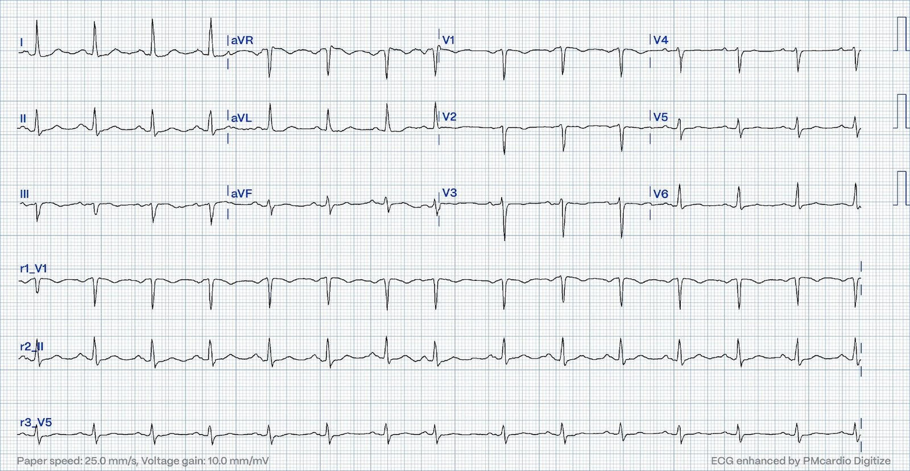
Bạn nghĩ gì?

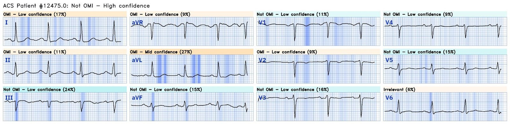
Queen of Hearts nhận định không có OMI với độ tin cậy cao. Có vẻ bà hơi lo ngại về một chút chênh xuống rất kín đáo ở các chuyển đạo bên cao, nhưng ngoài ra thì thấy đây là một bản ghi khá lành tính. Hãy nhớ lại từ bài này, có dẫn nghiên cứu này, rằng “ST chênh xuống soi gương ở aVL rất nhạy đối với OMI thành dưới (tốt hơn nhiều so với tiêu chuẩn STEMI) và loại trừ viêm màng ngoài tim, nhưng không đặc hiệu cho OMI.” Trên bản ghi còn có gì khác để củng cố chẩn đoán OMI thành dưới không?
Smith: ST chênh lên kín đáo ở thành dưới đó, cùng với ST chênh xuống soi gương kín đáo ở I và aVL, rất đáng nghi OMI thành dưới, nhưng với sóng T đảo ngược ở III thì có lẽ là OMI đang tái tưới máu. Khi thấy hình ảnh này, tôi luôn xem V2 để tìm bất kỳ bằng chứng nào của OMI thành sau (ST chênh xuống, hoặc mất hay đảo ngược sóng T, hoặc đoạn ST dốc xuống: có sóng T âm), và xem V6 để tìm ST chênh lên (bình thường). Vì vậy tôi sẽ lo ngại OMI thành dưới. Hơn nữa, bệnh nhân còn triệu chứng đang diễn ra và có troponin tăng không giải thích được, nên bà đang bị nhồi máu cơ tim, và câu hỏi duy nhất là đó là nhồi máu típ 1 hay típ 2 do tăng huyết áp.
Smith nói thêm: Mỗi khi có ai gửi cho tôi một điện tâm đồ để xác định có OMI hay không, tôi đều nói: “Bất kỳ bệnh nhân OMI nào cũng có thể có điện tâm đồ không cho thấy OMI. Một bệnh nhân OMI có thể có điện tâm đồ hoàn toàn bình thường!” Điều này đặc biệt đúng với tắc động mạch mũ. Xem ca này: Persistent Chest Pain, an Elevated Troponin, and a Normal ECG. At midnight. (Đau ngực dai dẳng, troponin tăng và điện tâm đồ bình thường. Lúc nửa đêm.)
Ca bệnh tiếp diễn
Bà được cho liều nạp aspirin 325 mg, và troponin lấy lại vào khoảng thời điểm ghi điện tâm đồ 1 có kết quả 267 ng/L.
Với thông tin này, bạn sẽ làm gì vào lúc này?
Khoảng một giờ sau, bệnh nhân được tiêm labetalol 20 mg tĩnh mạch và bắt đầu truyền heparin liên tục. Troponin lần thứ ba được lấy, kết quả sau đó là 450 ng/L, một mức tăng động rõ ràng. Khoa tim mạch được mời hội chẩn, và điện tâm đồ được ghi lại vào khoảng 2:30 sáng. Không rõ lúc này bệnh nhân có những triệu chứng gì.
Điện tâm đồ 2

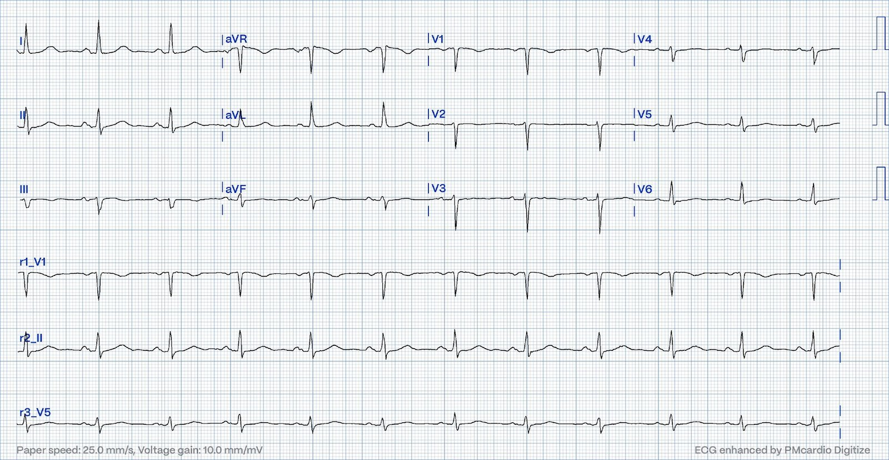
Bạn nghĩ gì?

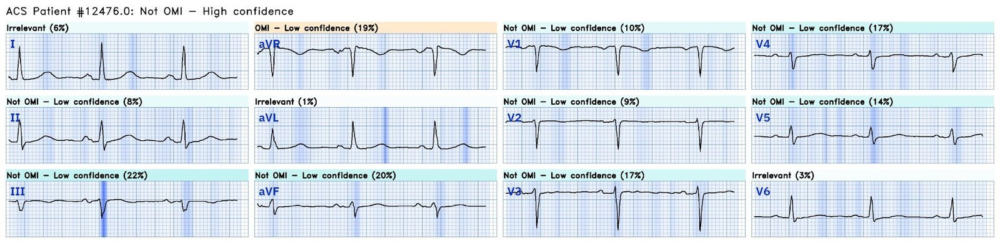
Queen of Hearts một lần nữa nhận định không có OMI với độ tin cậy cao. Các chỗ ST chênh xuống kín đáo ở chuyển đạo bên cao đã hết. Bạn có thể nhận thấy vài khác biệt rất kín đáo khác, nhưng khó biết nên hiểu chúng thế nào. Sóng T ở I/aVL dương hơn và cân đối hơn một chút, và sóng T ở V1-2 trước đây đảo ngược nay về cơ bản đã dẹt. Đây là biến thiên bình thường của điện tâm đồ nền hay là thay đổi thiếu máu cục bộ động? Sự hiện diện của troponin đang tăng và triệu chứng đau thắt ngực chắc chắn ủng hộ khả năng sau, nhưng các thay đổi cực kỳ kín đáo. Việc hết ST chênh xuống ở chuyển đạo bên cao và xuất hiện sóng T dương, cân đối hơn gợi khả năng OMI thành dưới đang tái tưới máu. Các thay đổi này được trình bày cạnh nhau dưới đây.

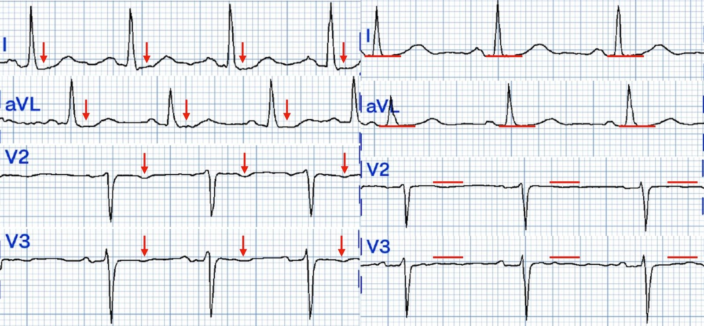
Ở phiên bản 1 này, Queen of Hearts không so sánh các điện tâm đồ liên tiếp. Bà không thể thấy thay đổi này!
Ngay sau khi ghi điện tâm đồ này, bệnh nhân được tiêm morphin 2 mg tĩnh mạch và triệu chứng cải thiện. Đến lúc được khoa tim mạch khám, cơn đau của bà đã đỡ hơn, nhưng không rõ đã hết hẳn hay chưa. Ghi chép của khoa tim mạch nêu chẩn đoán nghi nhồi máu cơ tim không ST chênh lên (NSTEMI) típ 1 và kế hoạch thông tim trong ngày.
Vài lưu ý:
- Morphin điều trị MỌI dạng đau. Bệnh nhân sẽ thấy dễ chịu hơn sau khi dùng morphin. Nhưng đau là một tín hiệu quan trọng trong nhồi máu cơ tim và cho bác sĩ lâm sàng biết mức độ khẩn cấp. Bạn sẽ không trì hoãn phẫu thuật một ruột thừa vỡ chỉ vì cơn đau đã hết nhờ morphin. Cũng vì lý do đó, bạn không nên trì hoãn chụp mạch vành chỉ vì cơn đau hết nhờ morphin. Điều này khác với nitroglycerin, thuốc gây giãn mạch và có thể làm giảm đau nhờ cải thiện tưới máu cơ tim.
- Cả hướng dẫn AHA/ACC năm 2014 đã lỗi thời lẫn hướng dẫn ESC năm 2023 mới cập nhật đều khuyến cáo xử trí xâm lấn ngay lập tức ở bệnh nhân đau ngực không kiểm soát được. Hãy nhớ rằng OMI là một chẩn đoán lâm sàng mà thường tạo ra các thay đổi điện tâm đồ có giá trị chẩn đoán, nhưng không phải lúc nào cũng vậy.
- Hãy nhớ rằng RIDDLE-NSTEMI đã tuyển những bệnh nhân tương tự ca này, và cho thấy giảm 68% tử vong hoặc nhồi máu cơ tim sau một tháng ở bệnh nhân được xử trí xâm lấn ngay (< 2 giờ) so với xâm lấn trì hoãn (2-72 giờ). Kết quả này được duy trì sau một năm theo dõi.
Smith: Như Willy đã nói, hội chứng vành cấp (ACS) với triệu chứng dai dẳng là một chỉ định được hướng dẫn khuyến cáo để chụp mạch vành trong vòng ＜2 giờ (cả ACC/AHA và ESC). ESC nêu rằng bệnh nhân nghi ACS nên được đưa đến phòng thông tim (cath lab) trong vòng ＜2 giờ “bất kể có bằng chứng nhồi máu cơ tim trên điện tâm đồ hay chất chỉ điểm sinh học hay không!!” Đáng tiếc, nghiên cứu duy nhất về mức độ tuân thủ khuyến cáo cho ACS nguy cơ cao này cho thấy khuyến cáo chỉ được tuân thủ trong 6% trường hợp. Chúng tôi đã chứng minh rằng morphin liên quan với kết cục xấu hơn (xem Những điểm cần học bên dưới) và đã đăng nhiều bài blog về vấn đề này, chẳng hạn bài này: Another myocardial wall is sacrificed at the altar of the STEMI/NonSTEMI mass delusion (and Opiate pain relief). (Thêm một thành tim nữa bị hiến tế trên bàn thờ của ảo tưởng tập thể STEMI/NonSTEMI (và giảm đau bằng opiat).)
Ca bệnh tiếp diễn…
Troponin lấy lại bốn giờ sau lần trước tăng từ 450 ng/L lên 1366 ng/L. Điện tâm đồ thứ ba được ghi vào khoảng 8 giờ sáng.
Điện tâm đồ 3

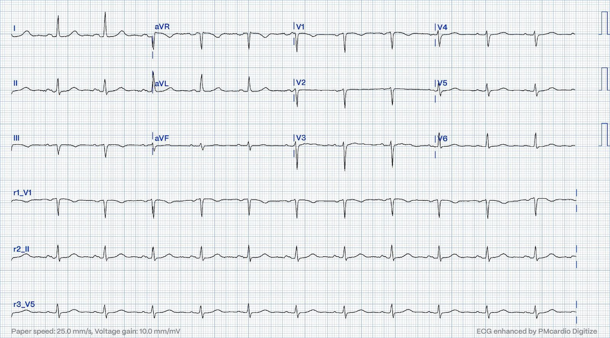
Bạn nghĩ gì?

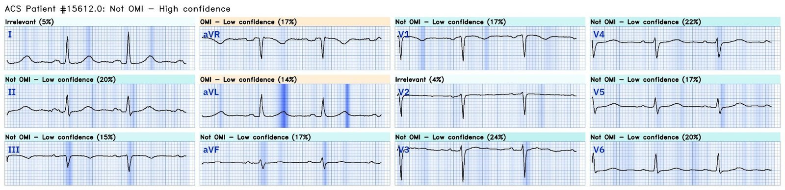
Queen of Hearts nhận định không có OMI với độ tin cậy cao. Khó thấy được nhiều khác biệt giữa điện tâm đồ 2 và 3. Sóng T ở I/aVL cao hơn một chút, có thể là bằng chứng của tái tưới máu kéo dài của một OMI thành dưới. Bốn giờ sau, vào khoảng giữa trưa, triệu chứng của bệnh nhân quay lại và dữ dội. Điện tâm đồ thứ tư được ghi.
Điện tâm đồ 4

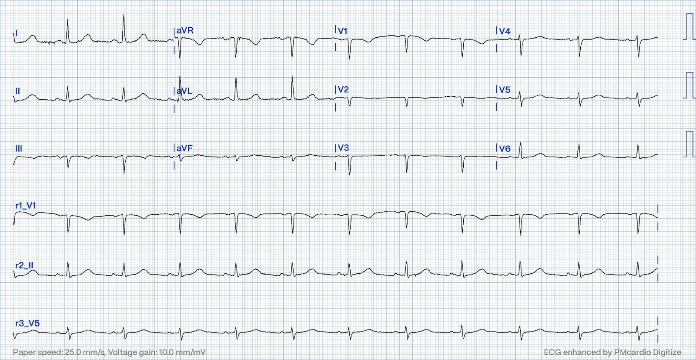
Bạn nghĩ gì?

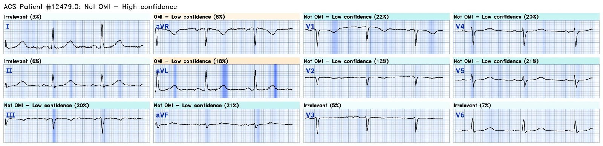
Queen of Hearts nhận định không có OMI với độ tin cậy cao. Hãy để ý rằng khi triệu chứng của bệnh nhân nặng lên, diện tích dưới đường cong của sóng T ở II đột ngột lớn hơn nhiều (có thể là tối cấp), và sóng T trước đây dẹt ở V2-3 nay đảo ngược kín đáo. Nó kín đáo đến mức không thấy rõ ở mọi nhát bóp. Điều này có thể phù hợp với tắc lại của một nhồi máu cơ tim thành dưới-sau. Điều này được trình bày dưới đây.

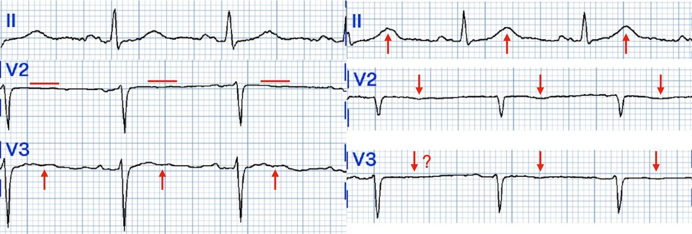
Vài giờ sau, bệnh nhân được chụp mạch vành, cho thấy tắc hoàn toàn động mạch mũ trái (LCx) đoạn giữa.
Bạn có thể thấy bằng chứng của huyết khối. Có hiện tượng gọi là “đọng” thuốc cản quang (contrast hangup) trong huyết khối, còn lại từ một lần bơm trước đó, nên huyết khối thấy được ngay cả trước khi bơm thuốc trên đoạn phim này. Huyết khối được khoanh đỏ dưới đây.

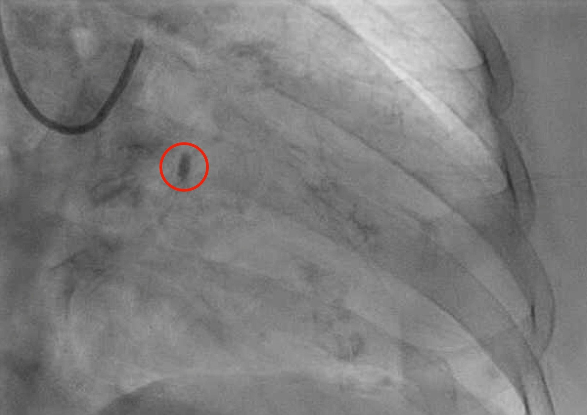
Đây là hình chụp mạch vành sau khi đặt stent.
Sau khi rời phòng thông tim, troponin lấy lại là 20.380 ng/L, và tối hôm đó đạt đỉnh 29.571 ng/L trước khi giảm dần. Bệnh nhân bị một ổ nhồi máu lớn. Siêu âm tim có tăng cường cản âm của bà được trình bày dưới đây ở mặt cắt trục ngắn cạnh ức. Hãy để ý rằng giữa các đường đỏ, ở thành dưới-bên (cũng là một cách gọi khác của thành sau), độ dày lên ít hơn nhiều. Vùng này giảm động nặng hoặc thậm chí vô động.
Một điện tâm đồ cuối cùng được ghi vào sáng hôm sau, trình bày dưới đây.
Điện tâm đồ 5

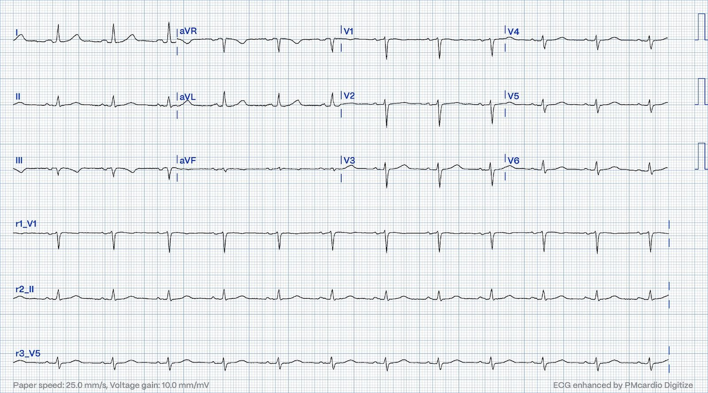

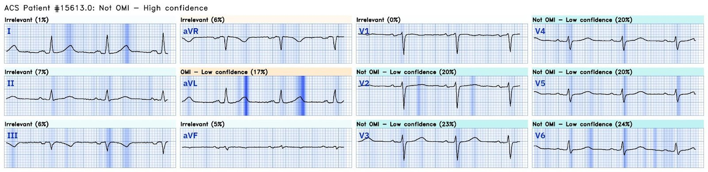
Đặc biệt khi giờ đây chúng ta đã biết chẩn đoán, chúng ta có thể nhận ra các thay đổi sau.
- Sóng T ở II không còn tối cấp
- Sóng T ở III đảo ngược sâu hơn, phù hợp với tái tưới máu
- Sóng T ở aVF đảo ngược kín đáo, phù hợp với tái tưới máu
- Sóng T ở V2-3 đã chuyển từ đảo ngược/dẹt sang dương, là hình soi gương của sóng T tái tưới máu đảo ngược ở thành sau

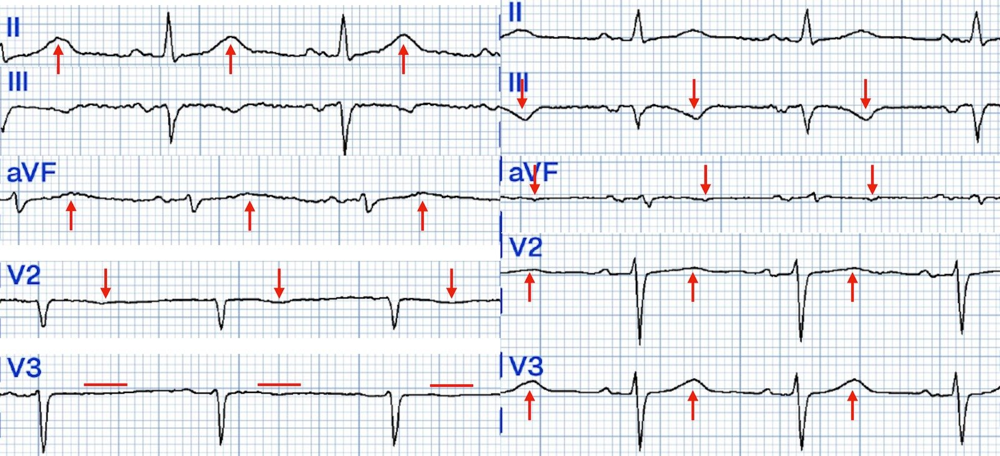
Những điểm cần học
- OMI là một chẩn đoán lâm sàng. Thường có các dấu hiệu điện tâm đồ có giá trị chẩn đoán nhưng không phải lúc nào cũng có. Các dấu hiệu điện tâm đồ có thể cực kỳ kín đáo, đến mức ngay cả một trí tuệ nhân tạo được huấn luyện kỹ và có độ chính xác cao cũng có thể bỏ sót.
- On its way from occlusion to reperfusion (or vice versa), the ECG can be normal or near normal (Trên đường từ tắc đến tái tưới máu, hoặc ngược lại, điện tâm đồ có thể bình thường hoặc gần bình thường).
- Bạn không cần đọc điện tâm đồ giỏi hơn Queen of Hearts mới hiểu được rằng đau ngực kháng trị CẦN THÔNG TIM NGAY. Y học luôn nhắc chúng ta về tầm quan trọng hàng đầu của việc khai thác bệnh sử, một kỹ năng thiết yếu của con người để phối hợp cùng AI.
- Trong bối cảnh đau ngực đáng lo ngại hoặc triệu chứng tương đương đau ngực, một mức troponin tăng chậm có thể ru ngủ bác sĩ lâm sàng vào cảm giác an toàn giả tạo. Bệnh nhân này có vài lần đo troponin tăng, nhưng không tăng mạnh. Rốt cuộc, bà bị một ổ nhồi máu lớn mà lẽ ra có thể ngăn được nhờ can thiệp sớm hơn. Nếu bạn chờ đến khi troponin “thật sự thuyết phục”, bạn đã mất rất nhiều cơ tim. Điều này giống như thấy tầng hầm nhà mình bị ngập, rồi kiên nhẫn quan sát cho đến khi phòng khách chìm trong nước để xác nhận có vấn đề, rồi mới chịu bật máy bơm nước.
- Morphin làm mất cảm giác đau. Nhưng đau là một tín hiệu then chốt về mức độ khẩn cấp trong bối cảnh hội chứng vành cấp. Nếu bạn đang cho morphin vì cơn đau kháng với nitrat, thì bệnh nhân lẽ ra phải đang trên đường đến phòng thông tim!
- Đôi khi thay đổi soi gương rõ ràng hơn thay đổi nguyên phát. Trong ca này, có lẽ dấu hiệu dễ nhận ra nhất là ST chênh xuống ở I và aVL trên điện tâm đồ 1. Hãy nhớ rằng ST chênh xuống ở aVL rất nhạy đối với OMI thành dưới, dù không đặc hiệu.
Tài liệu tham khảo cho Những điểm cần học:
Amsterdam, E. A., Wenger, N. K., Brindis, R. G., Casey, D. E., Ganiats, T. G., Holmes, D. R., Jaffe, A. S., Jneid, H., Kelly, R. F., Kontos, M. C., Levine, G. N., Liebson, P. R., Mukherjee, D., Peterson, E. D., Sabatine, M. S., Smalling, R. W., và Zieman, S. J. (2014). 2014 AHA/ACC guideline for the management of patients with non–ST-elevation acute coronary syndromes. Tạp chí Circulation, 130(25). https://doi.org/10.1161/cir.0000000000000134
Bischof, J. E., Worrall, C., Thompson, P., Marti, D., và Smith, S. W. (2016). St depression in lead AVL differentiates inferior st-elevation myocardial infarction from pericarditis. Tạp chí The American Journal of Emergency Medicine, 34(2), 149–154. https://doi.org/10.1016/j.ajem.2015.09.035
Byrne, R. A., Rossello, X., Coughlan, J. J., Barbato, E., Berry, C., Chieffo, A., Claeys, M. J., Dan, G.-A., Dweck, M. R., Galbraith, M., Gilard, M., Hinterbuchner, L., Jankowska, E. A., Jüni, P., Kimura, T., Kunadian, V., Leosdottir, M., Lorusso, R., Pedretti, R. F., … Zeppenfeld, K. (2023). 2023 ESC guidelines for the management of acute coronary syndromes. Tạp chí European Heart Journal, 44(38), 3720–3826. https://doi.org/10.1093/eurheartj/ehad191
Milosevic, A., Vasiljevic-Pokrajcic, Z., Milasinovic, D., Marinkovic, J., Vukcevic, V., Stefanovic, B., Asanin, M., Dikic, M., Stankovic, S., và Stankovic, G. (2016). Immediate versus delayed invasive intervention for non-stemi patients. Tạp chí JACC: Cardiovascular Interventions, 9(6), 541–549. https://doi.org/10.1016/j.jcin.2015.11.018
Opiat liên quan với kết cục xấu hơn trong nhồi máu cơ tim.
Xem ca này: A man his 50s with chest pain. What happens when you treat with morphine rather than with reperfusion? (Điều gì xảy ra khi bạn điều trị bằng morphin thay vì tái tưới máu?)
—-Xem nghiên cứu này cho thấy mối liên quan giữa morphin và tử vong trong ACS:
Dùng morphin trong ACS liên quan độc lập với tử vong, với tỷ số chênh (odds ratio) là 1,4. Meine TJ, Roe M, Chen A, Patel M, Washam J, Ohman E, Peacock W, Pollack C, Gibler W, Peterson E. Association of intravenous morphine use and outcomes in acute coronary syndromes: Results from the CRUSADE Quality Improvement Initiative. Tạp chí Am Heart J. 2005;149:1043–1049.
Và một nghiên cứu khác do chúng tôi viết:
—-Bracey, A. Meyers HP. Smith SW. Wei L. Singer DD. Singer A. Association between opioid analgesia and delays to cardiac catheterization of patients with occlusion Myocardial Infarctions. Tạp chí Academic Emergency Medicine 27(S1): S220; tháng Năm 2020. Tóm tắt (abstract) 556.
Kết quả chính: Bệnh nhân OMI STEMI âm tính (STEMI(-) OMI)
65 (23,9%) bệnh nhân được phát hiện có nhồi máu cơ tim do tắc (OMI) STEMI âm tính (STEMI(-) OMI) tại thời điểm thông tim. 45 bệnh nhân OMI STEMI âm tính không dùng opioid trước thông tim có thời gian từ cửa đến bóng (door-to-balloon) là 75 phút, so với 684 phút ở 25 bệnh nhân OMI STEMI âm tính có dùng opioid trước thông tim.
Khuyến cáo cho ACS nguy cơ cao chỉ được tuân thủ ở 6% bệnh nhân:
Lupu L, Taha L, Banai A, Shmueli H, Borohovitz A, Matetzky S, Gabarin M, Shuvy M, Beigel R, Orvin K, Minha S ’ar, Shacham Y, Banai S, Glikson M, Asher E. Immediate and early percutaneous coronary intervention in very high-risk and high-risk non-ST segment elevation myocardial infarction patients. Tạp chí Clin Cardiol [Internet]. 2022; Có tại: https://onlinelibrary.wiley.com/doi/10.1002/clc.23781

===================================
BÌNH LUẬN CỦA TÔI, bởi KEN GRAUER, MD (11/12/2023):
===================================
Một trong những dấu hiệu lâm sàng của OMI mới xảy ra (hoặc đang diễn ra) hay bị bỏ qua nhất — bắt nguồn từ việc không đối chiếu sự hiện diện và mức độ tương đối của CP (Chest Pain – đau ngực) với từng điện tâm đồ liên tiếp trong ca bạn đang đánh giá.
- Ca hôm nay minh họa việc bỏ sót khâu đối chiếu sự hiện diện và mức độ tương đối của triệu chứng với từng điện tâm đồ — có thể dễ dàng giải thích vì sao không nhận ra kịp thời các OMI đang diễn ra.
- Việc đối chiếu sự hiện diện và mức độ triệu chứng với từng điện tâm đồ một trong suốt diễn biến bệnh của bệnh nhân là DỄ. Chỉ cần ghi vào hồ sơ (và/hoặc lên từng điện tâm đồ) — LIỆU đau ngực có hay không có vào thời điểm ghi bản ghi đó — và, NẾU có — mức độ tương đối của cơn đau ngực ấy trên thang điểm từ 1 đến 10. Đáng tiếc, điều này đã không được thực hiện trong ca hôm nay.
- Tôi cho rằng lý do chính khiến thông tin trên thường bị bỏ sót như vậy trong các ca tôi xem lại — là do chưa hiểu rõ sinh lý bệnh của OMI cấp. Tắc mạch vành cấp thường gây đau ngực và các thay đổi ST-T cấp (ST chênh lên và/hoặc các dấu hiệu điện tâm đồ cấp khác).
- Tái tưới máu cấp của mạch “thủ phạm” — thường đi kèm với sự bình thường hóa các dấu hiệu điện tâm đồ bất thường, song hành với giảm hoặc hết đau ngực.
- Tái tưới máu tự phát của động mạch “thủ phạm” không hiếm gặp. Về lâm sàng, điều này được nhận ra giống như cách nhận ra tái tưới máu sau PCI hoặc điều trị tiêu sợi huyết — tức là, nhờ giảm đau ngực và cải thiện các bất thường ST-T.
- NHƯNG — trừ khi có ghi chép về diễn tiến lâm sàng của mức độ triệu chứng gắn với từng điện tâm đồ được ghi — tái tưới máu tự phát sẽ quá thường xuyên bị bỏ sót. Chúng tôi đã minh họa khái niệm này rất nhiều lần trong các bài trước trên Dr. Smith’s ECG Blog (Xem phần Bình luận của tôi trong bài ngày 12 tháng Bảy năm 2023 — bài ngày 18 tháng Năm năm 2023 — và bài ngày 9 tháng Tư năm 2023, cùng nhiều bài khác).
- ĐIỀU CỐT LÕI: Nhận thức và vận dụng khái niệm nêu trên về tái tưới máu tự phát dẫn đến “giả bình thường hóa” điện tâm đồ, chỉ còn lại các bất thường ST-T không đặc hiệu — lẽ ra có thể (lẽ ra phải) giúp chẩn đoán OMI cấp sớm hơn nhiều ở bệnh nhân hôm nay, có lẽ ngay khi kết quả troponin lần 1 trả về tăng đáng kể.